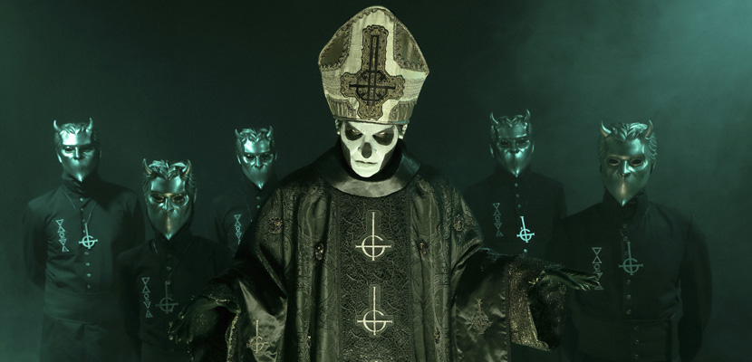

Ghost (anteriormente creditada como Ghost B.C. nos Estados Unidos) é uma banda sueca de rock formada em 2008 na cidade de Linköping. Sua discografia é composta até o momento de 5 álbuns de estúdio, uma demo, 18 singles, 3 EPs e um álbum ao vivo.
O estilo da banda mistura heavy metal, rock progressivo e psicodélico das décadas de 1960 e 1970 somado ao rock alternativo e pop rock mais contemporâneo. As letras das músicas são, em sua maioria, de cunho ocultista – porém de forma teatral, que contrasta com a sensibilidade e os vocais limpos que permeiam as canções. Os teclados, órgãos, instrumentação vintage e a produção muito limpa fazem os álbuns soarem inteiramente analógicos. Vários críticos descreveram a música como "sedutoramente lisa e memorável".

Os membros da banda são anônimos, porém, após uma série de conflitos legais tornou-se público que o vocalista é o músico multi-instrumentista sueco Tobias Forge. Ghost é conhecido por sua presença excêntrica no palco. Sete dos oito membros do grupo, conhecidos como "Nameless Ghouls", usam trajes virtualmente idênticos que escondem o rosto. Antes de um processo de 2017 movido por ex-membros da banda, o vocalista Tobias Forge obscureceu sua identidade por trás de uma sucessão de personagens com o título de "Papa Emérito". Retratado por Forge em uma máscara protética e maquiagem escura, a persona foi descrita como um "antipapa demoníaco",e passou por cinco encarnações: I, II, III e IV, com um personagem conhecido como Papa Zero ou Papa Nihil.
]